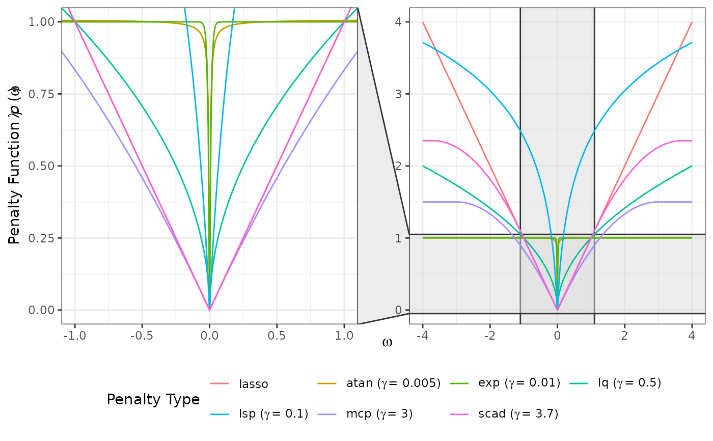
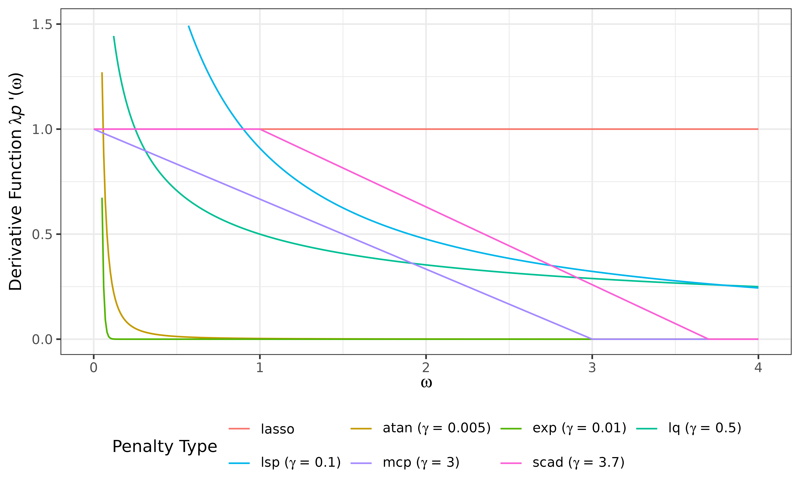

Generate a visualization of penalty functions produced by
compute_penalty, or penalty derivatives produced by
compute_derivative.
The plot automatically summarizes multiple configurations of penalty type,
\(\lambda\), and \(\gamma\). Optional zooming is supported through
facet_zoom.
Usage
# S3 method for class 'penderiv'
plot(x, ...)Arguments
- x
An object inheriting from S3 class
"penderiv", typically returned bycompute_penalty, orcompute_derivative.- ...
Optional arguments passed to
facet_zoomto zoom in on a subset of the data, while keeping the view of the full dataset as a separate panel.
Examples
library(grasps)
library(ggplot2)
pen_df <- compute_penalty(
omega = seq(-4, 4, by = 0.01),
penalty = c("atan", "exp", "lasso", "lq", "lsp", "mcp", "scad"),
lambda = 1)
plot(pen_df, xlim = c(-1, 1), ylim = c(0, 1), zoom.size = 1) +
guides(color = guide_legend(nrow = 2, byrow = TRUE))

deriv_df <- compute_derivative(
omega = seq(0, 4, by = 0.01),
penalty = c("atan", "exp", "lasso", "lq", "lsp", "mcp", "scad"),
lambda = 1)
plot(deriv_df) +
scale_y_continuous(limits = c(0, 1.5)) +
guides(color = guide_legend(nrow = 2, byrow = TRUE))
#> Warning: Removed 79 rows containing missing values or values outside the scale range
#> (`geom_line()`).
